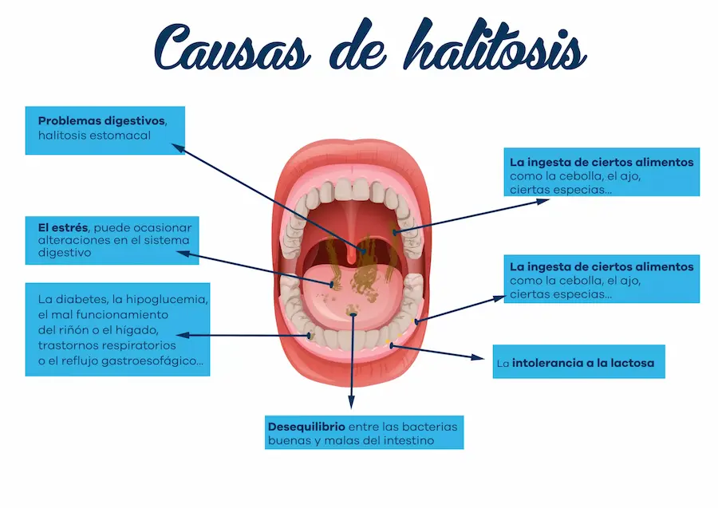

PERIODONTITIS

Halitosis o mal aliento
La halitosis o mal aliento está provocada, en su mayoría, por enfermedades periodontales de la boca, falta de higiene o por el consumo de tabaco.
Es por eso que se debe incorporar a la rutina de higiene oral el uso de limpiadores linguales y así eliminar restos de suciedad y saburra lingual –capa de suciedad de aspecto blanquecino–.
También existe un tipo de halitosis que se produce fuera de la boca, provocada por problemas del sistema digestivo o respiratorio. Esto hace aún más importante las visitas regulares al dentistas, pues identificar el origen del mal aliento puede ayudar a prevenir graves enfermedades.